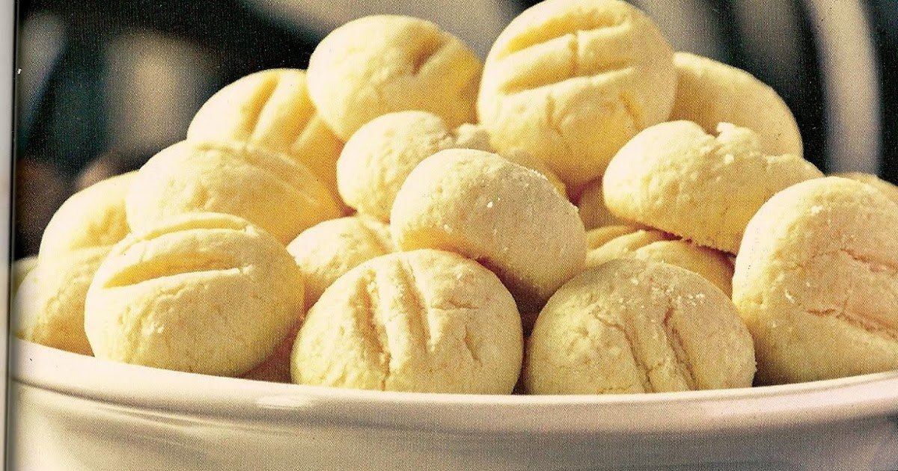

Doces · Biscoitos
Sequilhos de coco

Ingredientes
- 1 1/3 xícara de farinha
- 3/4 xícara de açúcar
- 1 colher (chá) de fermento
- 50 g de coco ralado
- Sal
- 3/4 xícara de manteiga
- 1 gema
Modo de preparo
- Misture secos; incorpore manteiga e gema até desgrudar das mãos.
- Faça cordões, corte como nhoque, marque com garfo; asse a 180 °C 15 min.
Observação
Rendimento: 90 sequilhos.